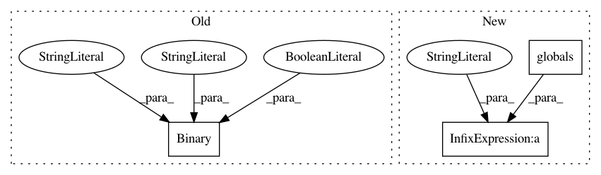

3fc7712f3cf5329220e75d5dd75d8a1ad0d24be1,cellprofiler/modules/correctilluminationcalculate.py,CorrectIlluminationCalculate,create_settings,#CorrectIlluminationCalculate#,79
Before Change
<i>(Used only if the dilated image is to be retained for later use in the pipeline)</i><br>
Enter a name that will allow the dilated image to be selected later in the pipeline.""")
self.automatic_splines = cps.Binary(
"Automatically calculate spline parameters?", True,
doc =
<i>(Used only if Splines are selected for the smoothing method)</i><br>
Leave this setting checked to automatically calculate
the parameters for spline fitting. Uncheck the setting to
specify the background mode, background threshold, scale,
maximum // of iterations and convergence.)
self.spline_bg_mode = cps.Choice(
"Background mode",
[MODE_AUTO, MODE_DARK, MODE_BRIGHT, MODE_GRAY],
After Change
self.rescale_option = cps.Choice(
"Rescale the illumination function?",
[cps.YES, cps.NO, RE_MEDIAN], doc = """
The illumination function can be rescaled so that the pixel intensities
are all equal to or greater than 1. You have the following options:
<ul>
<li><i>Yes:</i> Rescaling is recommended if you plan to
use the <i>Regular</i> method (and hence, the <i>Division</i> option in
<b>CorrectIlluminationApply</b>) so that the corrected images are in the
range 0 to 1.</li>
<li><i>No:</i> Rescaling is not recommended if you plan to use the <i>Background</i>
method, which is paired with the <i>Subtract</i> option in <b>CorrectIlluminationApply</b>.
Note that as a result of the illumination function being rescaled from 1 to
infinity, the rescaling of each image might be dramatic if there is substantial
variation across the field of view, causing the corrected images
to be very dark. </li>
<li>%(RE_MEDIAN)s<i>:</i> This option chooses the median value in the
image to rescale so that division increases some values and decreases others.</li>
</ul>"""%globals())
self.each_or_all = cps.Choice(
"Calculate function for each image individually, or based on all images?",
In pattern: SUPERPATTERN
Frequency: 3
Non-data size: 3
Instances
Project Name: CellProfiler/CellProfiler
Commit Name: 3fc7712f3cf5329220e75d5dd75d8a1ad0d24be1
Time: 2013-07-17
Author: mbray@broadinstitute.org
File Name: cellprofiler/modules/correctilluminationcalculate.py
Class Name: CorrectIlluminationCalculate
Method Name: create_settings
Project Name: CellProfiler/CellProfiler
Commit Name: 2c339f08da80a6a6d52df37b64fe148155a13e86
Time: 2011-02-24
Author: leek@1fc53939-2000-0410-845c-e8453a809027
File Name: cellprofiler/modules/align.py
Class Name: Align
Method Name: create_settings
Project Name: CellProfiler/CellProfiler
Commit Name: 4e347420b357c17e627f618ced550e1881fde173
Time: 2013-08-06
Author: mbray@broadinstitute.org
File Name: cellprofiler/modules/identifyprimaryobjects.py
Class Name: IdentifyPrimaryObjects
Method Name: create_settings